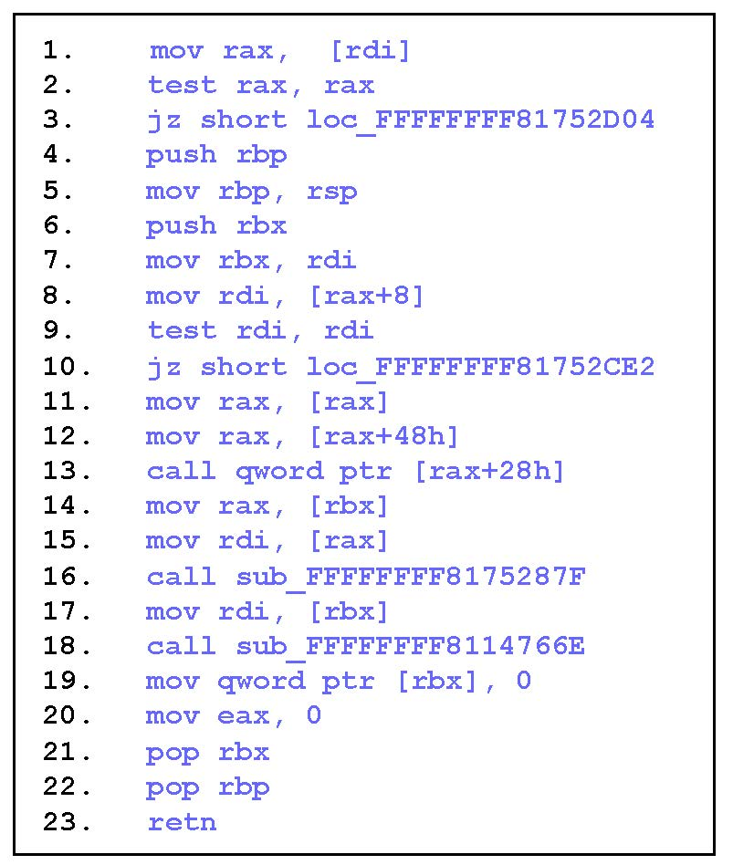
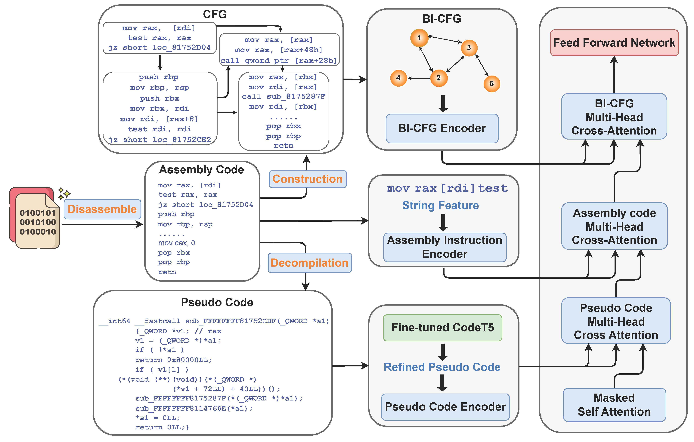

基于控制流图和伪代码的
二进制代码语义总结 (CP-BCS)
CP-BCS 二进制代码语义总结示例
在x86架构下函数名为gss_del_sec_context的二进制代码
二进制代码

CP-BCS 语义总结:
free all resources associated with context_handle. （释放与context_handle相关的所有资源。）
关于 CP-BCS
自动为二进制生成函数语义总结是一项极其有价值但具有挑战性的任务，因为它涉及将低级语言（汇编代码）的执行行为和语义翻译成人类可读的自然语言。然而，当前大多数理解汇编代码的工作都是面向生成函数名的，其中涉及了大量的缩写，使它们仍然令人困惑。为了弥合这个差距，我们专注于生成二进制函数的完整语义总结，尤其是在没有符号表和调试信息的剥离二进制（现实中的）上。为了充分利用汇编代码的语义，我们提出了一个由控制流图和伪代码引导的二进制代码语义总结框架，称为CP-BCS。CP-BCS利用双向指令级控制流图和伪代码，这些伪代码融合了专家知识，以学习全面的二进制函数执行行为和逻辑语义。我们对3种不同的二进制优化级别（O1，O2和O3）和3种不同的计算机架构（X86，X64和ARM）的CP-BCS进行评估。评估结果表明CP-BCS具有优越性，显著提高了逆向工程的效率。
CP-BCS 系统整体架构图
